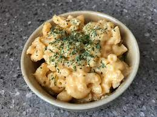

Mac and Cheese
Classic meal. Easy to cook, hard to digest. Cheesy comfort food.
- 300 g macaroni
- 30 g butter
- 25 g flour
- 500 ml milk
- 1 tsp Dijon mustard
- 200 g mature cheddar
- Salt and pepper to taste
- Preheat the oven to 220C / 200C Fan / Gas Mark 7.
- Cook the macaroni until it’s a bit less done than normal – a couple of minutes less than you would usually do. The brand I use takes 10 minutes normally, so I give it 8 minutes for macaroni cheese.
- While the macaroni is cooking, make the cheese sauce. Melt the butter in a medium sized pan on a low heat. When the butter is foaming, add the flour and stir until it’s mixed in. Then keep cooking for 2 minutes, stirring frequently. It takes guts to do this. It looks like something is going to go wrong but it doesn’t!
- Very gradually add the milk, stirring constantly. Make sure each bit of milk is incorporated before adding the next bit. If you do this slowly on a very low heat, you should end up with a perfectly smooth cheese sauce with no lumps and no need to whisk. However, if it does go wrong for some reason, you can always use a whisk to beat out the lumps.
- When all the milk is incorporated, add the mustard, salt and pepper. (N.B. I use slightly salted butter, so I don’t add any extra salt here.) Then add half the cheese, stir to combine and turn off.
- When the pasta is done, drain it, retaining a little bit of the cooking water.
- Tip the pasta and a couple of tablespoonfuls of the cooking water into the cheese sauce and stir.
- Pour the macaroni cheese into a shallow ovenproof dish and sprinkle over the remaining cheese.
- Bake in the oven for 10 minutes. The top should be brown but the bottom should still be saucy and the macaroni should be perfectly cooked.